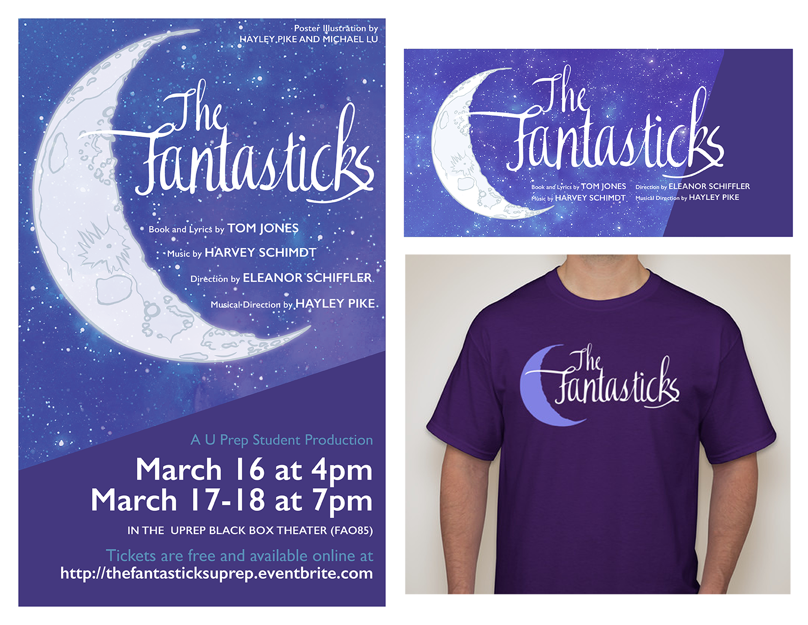

I've often combined my love of the theater and music with my graphic design skills. These are event posters for concerts and musical productions I have participated in, including the Fantasticks, when I served as musical director and media coordinator for the all-student production in my senior year of high school. As well as posters designed for print, I converted many of the designs into banners or icons for placement on social media, and even on t-shirts.